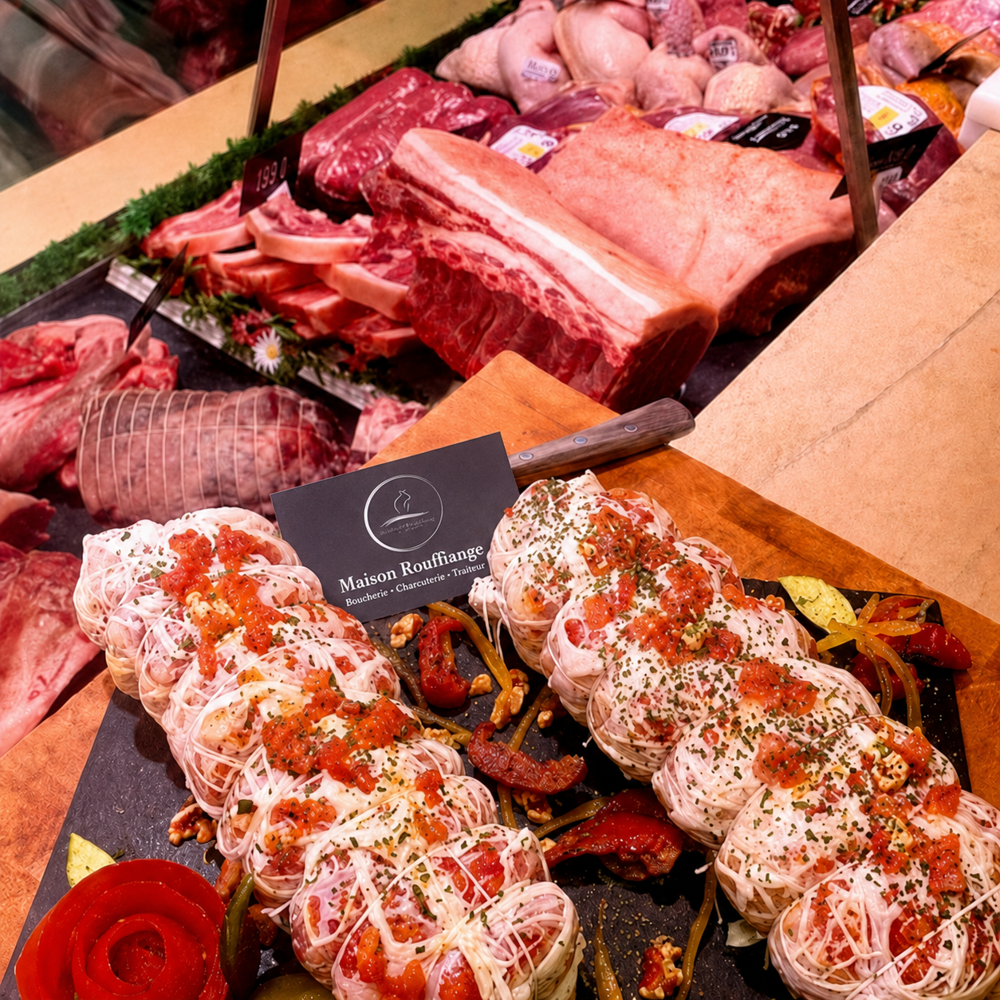
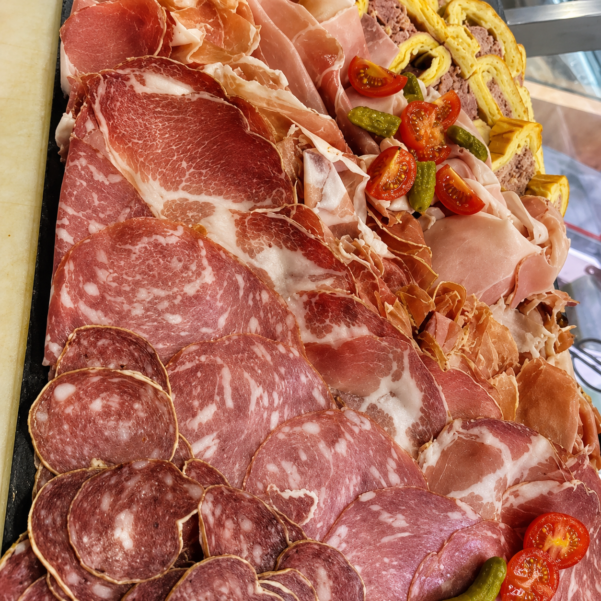
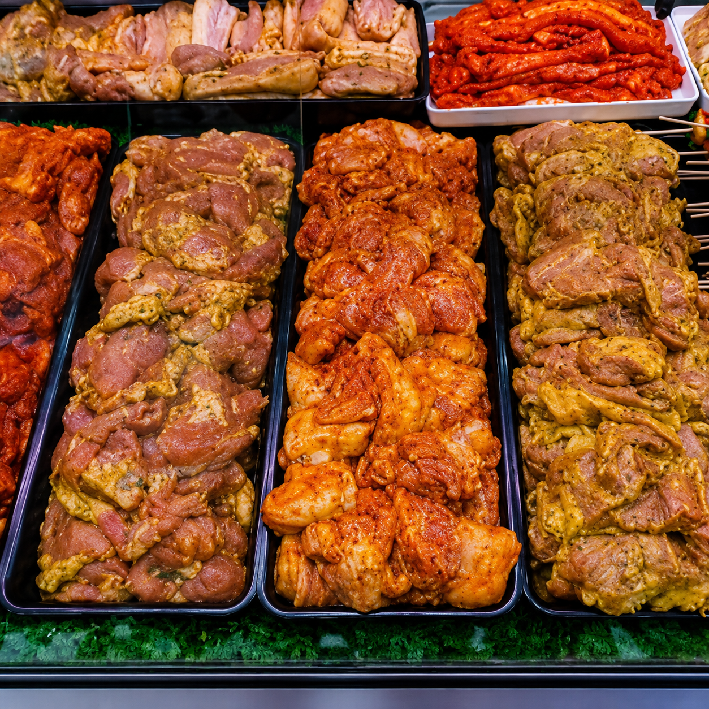
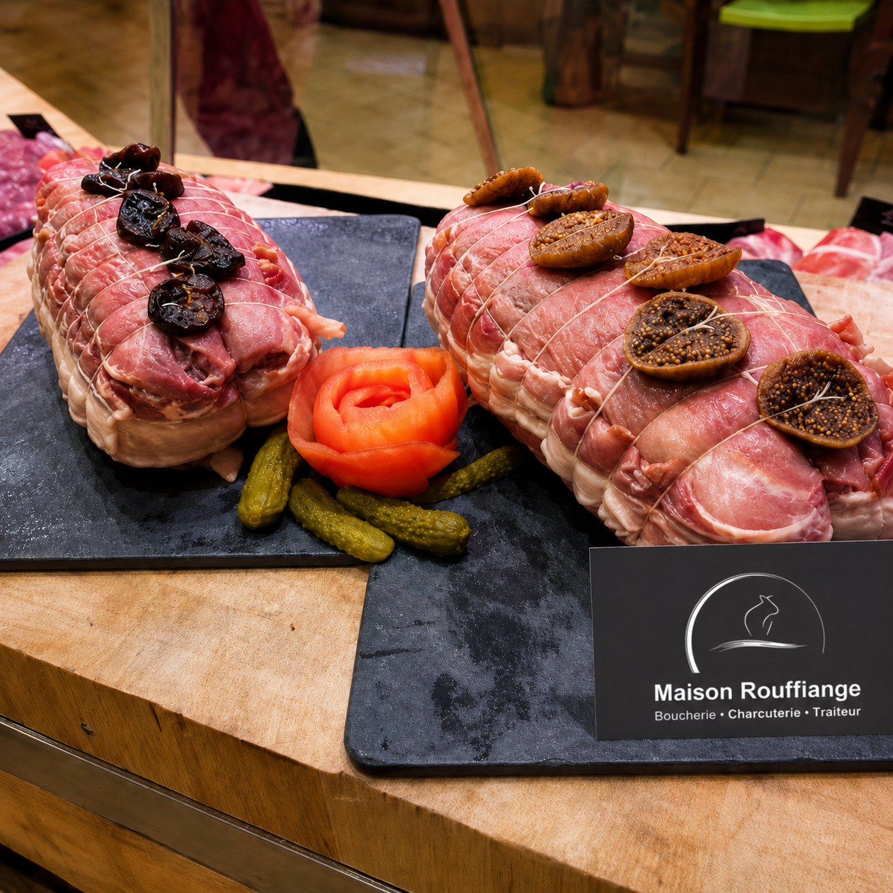
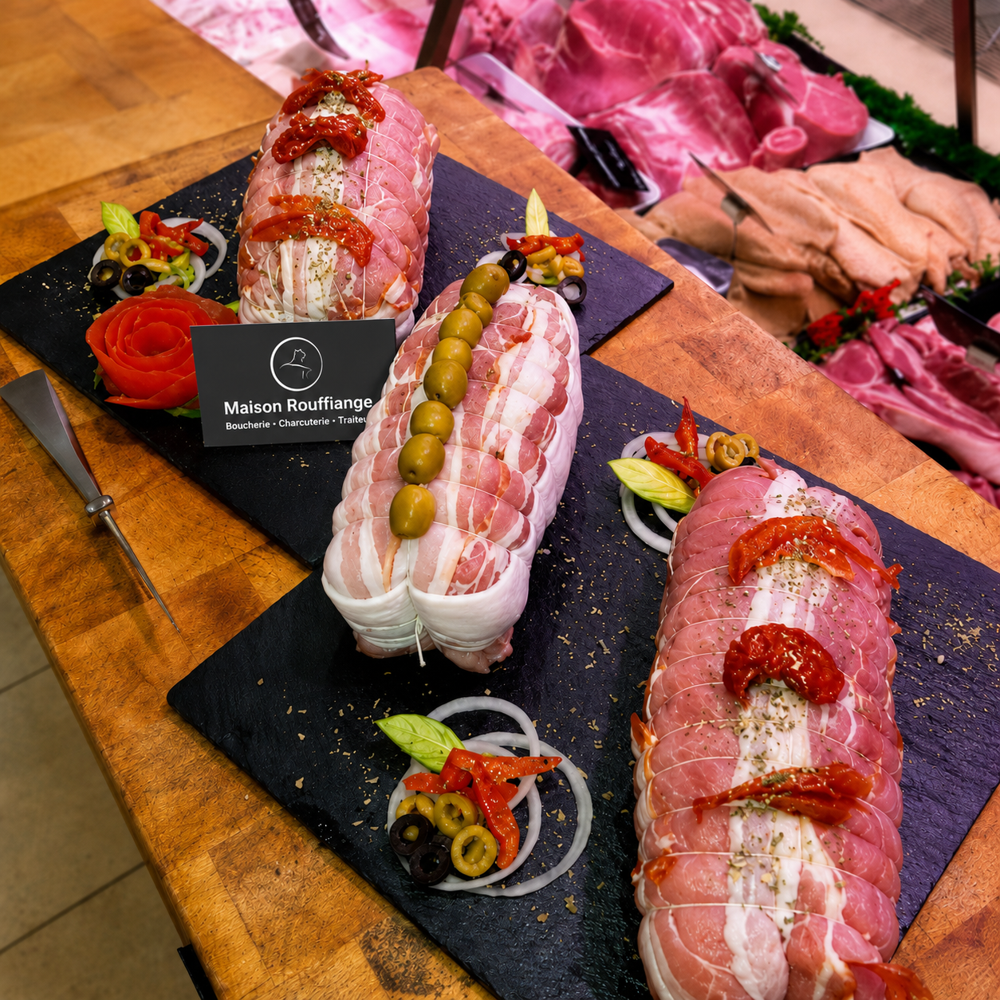
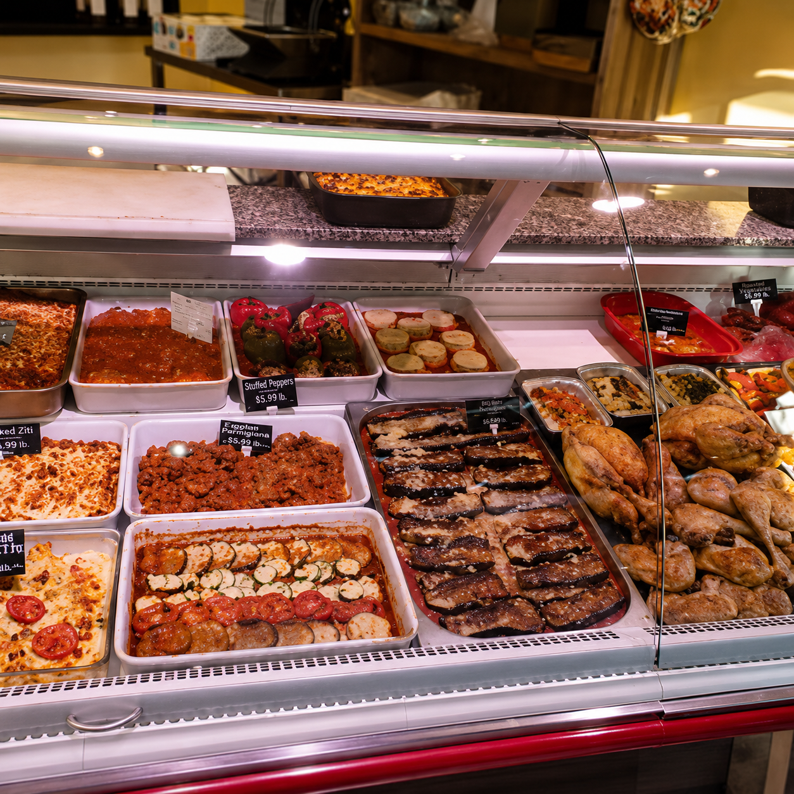
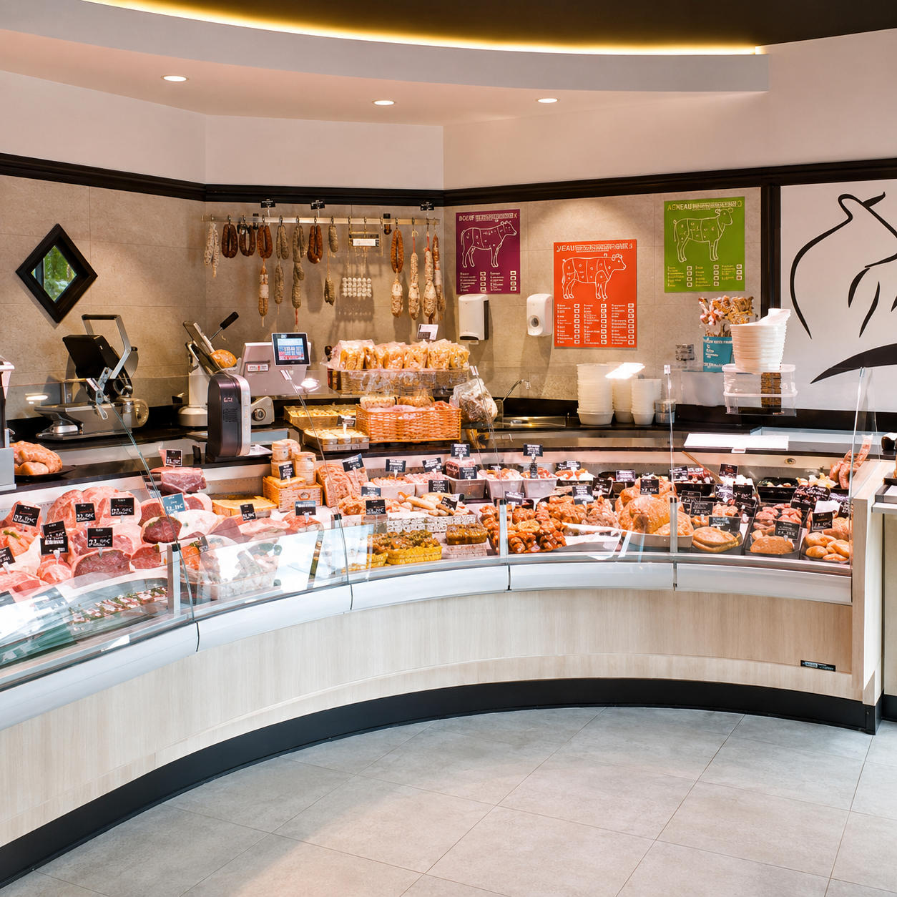
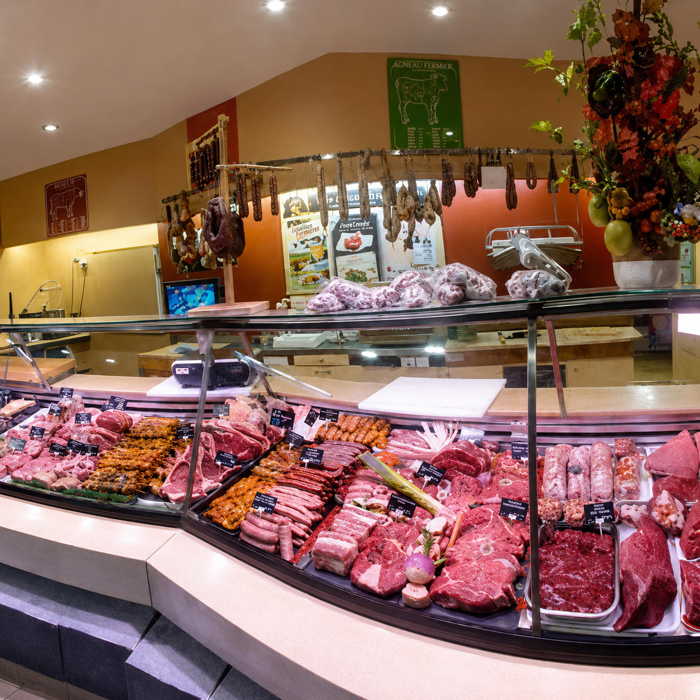

Boucherie
Des viandes sélectionnées avec soin, découpées et préparées chaque jour par nos bouchers.
Découvrir →Deux boutiques, une même exigence : produits sélectionnés, préparations maison et conseils de proximité.

Des viandes sélectionnées avec soin, découpées et préparées chaque jour par nos bouchers.
Découvrir →
Charcuteries maison, salaisons fines et spécialités traditionnelles élaborées avec gourmandise.
Découvrir →
Plats cuisinés, buffets et préparations maison pour le quotidien comme pour les grandes occasions.
Découvrir →
Brochettes maison, saucisses, viandes marinées et pièces à griller : tout pour préparer vos repas d’été avec les conseils de nos bouchers.
Des produits choisis auprès de partenaires de confiance.
Des recettes élaborées sur place par notre équipe.
Une équipe disponible pour vous guider dans vos choix.
Deux commerces de village, une relation simple et humaine.





Chaque boutique possède sa propre équipe, son adresse et son numéro de téléphone. Choisissez celle qui vous convient pour vos commandes.

